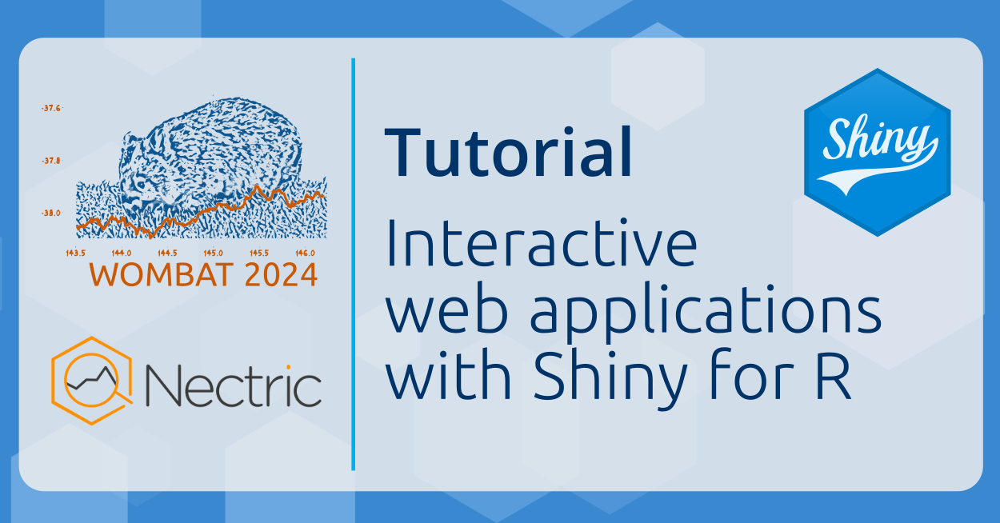

Tutorial AM 1: Oct 21 9:00-12:30
Interactive web applications with Shiny for R
Presenter
Mitchell O’Hara-Wild (he/him) is an award-winning teaching associate at Monash University and consultant at Nectric with particular expertise in forecasting, data analysis and statistical computing using R. He regularly uses Shiny in consulting projects to rapidly prototype, develop and deploy interactive web apps for various industry, academic and government clients. Mitchell is a prominent contributor to the R package ecosystem, and is passionate about empowering everyone to explore their world wworkshopith interactive data analysis tools.
Tutorial details
In just 3 hours, this tutorial will introduce the basics of creating shiny web applications. The best way to learn interactive web applications is interactively, so throughout the tutorial you'll have hands on experience with creating, debugging and publishing apps. Starting from just R basics, learn how to create shiny apps - including creating a UI, reactive programming, input validation, extension packages and app publishing!
Core learning objectives include:
- Create a simple user interface including dashboards
- Understand reactive programming for Shiny server code
- Use defensive programming to protect against malicious users
- Publish applications online with docker and/or shinyapps.io
Additional information can be found on the tutorial website here:
https://workshop.nectric.com.au/shiny-wombat24/
Background
This tutorial is suitable for R users needing to share data and results in interactive web applications. There is no need for prior experience in website development or shiny to get the most out of this tutorial. This tutorial is packed with content, and so familiarity with writing R code is essential. Some familiarity with tidyverse packages including dplyr and ggplot2 would also be beneficial to fully understand the demonstrated apps. If you are unfamiliar with writing R code or using the tidyverse, consider working through the learnr materials here: https://learnr.numbat.space/.
Register for this tutorial here.